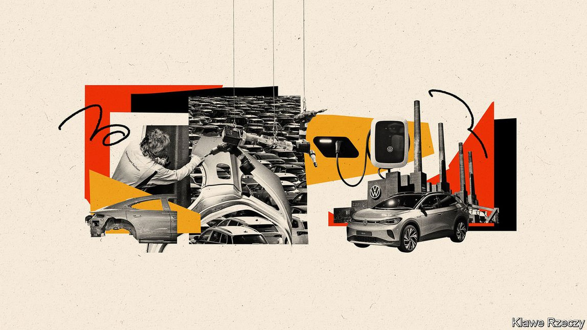
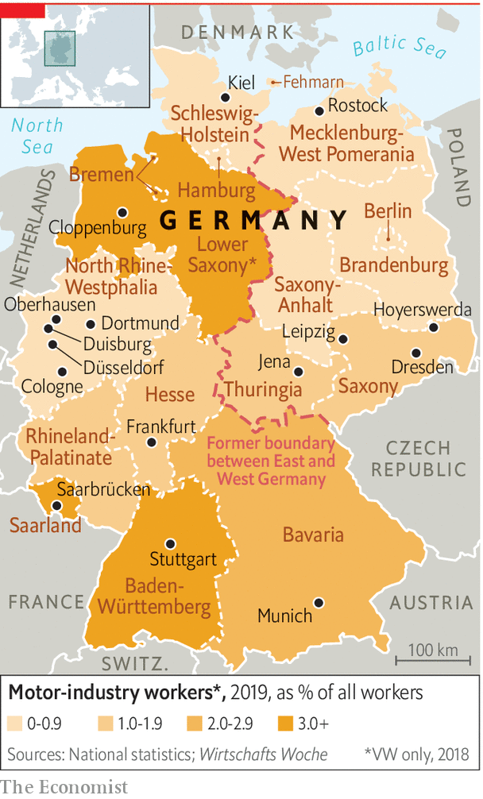
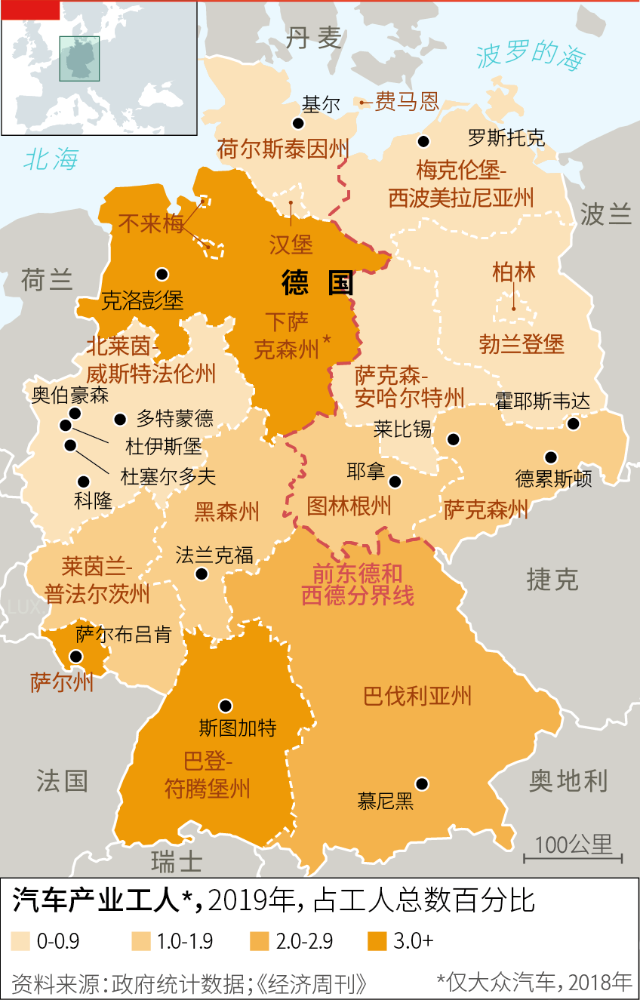
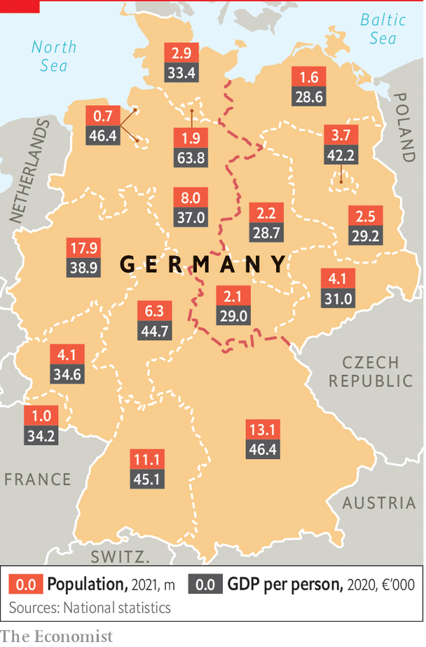
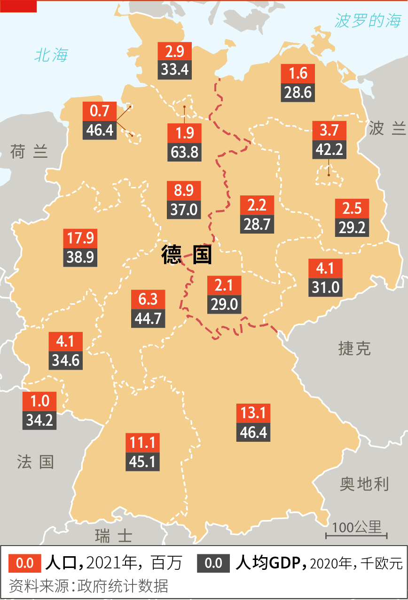

2021-10-11T14:46:30+00:00
The car industry
汽车产业
汽車產業
A troubled road lies ahead for German carmakers
德国车厂前路崎岖
德國車廠前路崎嶇
The all-powerful automotive sector faces a challenging future
叱咤风云的汽车业面对充满挑战的未来
叱吒風雲的汽車業面對充滿挑戰的未來
SAARLAND IS NO stranger to transition, jokes Thorben Albrecht, policy director for the IG Metall trade union. The second-smallest of the 16 states, for a century Saarland bounced back and forth between Germany and France, establishing itself inside the federal republic only in 1957. Coal deposits and steel made it rich, but also left it exposed to job losses when globalisation came knocking in the 1970s. A booming car-parts industry provided a cushion, but Saarland now faces a third shift, as industrial transformation and climate policy come after its two big sources of jobs: cars and what remains of steel.
萨尔州（Saarland）对变迁可不陌生，德国五金工会（IG Metall）的政策主管托本阿尔·布雷希特（Thorben Albrecht）玩笑道。这个德国16个州中第二小的州曾被德国和法国反复争夺了一个世纪，直到1957年才正式归于德国。这里的煤矿和钢铁让它成为富饶之地，却也让它在70年代全球化的冲击下遭遇工作岗位流失。那时新兴的汽车零部件产业提供了缓冲，但现在萨尔州又面临第三次转变：产业转型和气候政策正在冲击汽车产业和残留的钢铁产业这两大就业来源。
薩爾州（Saarland）對變遷可不陌生，德國五金工會（IG Metall）的政策主管托本阿爾·布雷希特（Thorben Albrecht）玩笑道。這個德國16個州中第二小的州曾被德國和法國反覆爭奪了一個世紀，直到1957年才正式歸於德國。這裡的煤礦和鋼鐵讓它成為富饒之地，卻也讓它在70年代全球化的衝擊下遭遇工作崗位流失。那時新興的汽車零部件產業提供了緩衝，但現在薩爾州又面臨第三次轉變：產業轉型和氣候政策正在衝擊汽車產業和殘留的鋼鐵產業這兩大就業來源。
The government wants 14m electric vehicles (EVs) on German roads by 2030, up from 1m today. But the slow death of the internal combustion engine undercuts the business model of gearbox, cooling-system or fuel-injection pump makers—suppliers that dot Saarland and other states. Almost 20,000 people work in Saarland’s car industry, mostly in small and medium-sized firms. The state has neither a large company headquarters nor a big city with a thriving service sector. “A huge reduction in car-sector jobs will mean social problems of a very large order,” says Hans-Christian Herrmann, who charted previous waves of deindustrialisation as the chief archivist in Saarbrücken, the state capital. An IG Metall survey found that 42% of German car workers fear for their future.
德国政府希望到2030年，国内电动汽车保有量将从现在的100万辆增加到1400万辆。但内燃机慢慢退出舞台，导致变速箱、冷却系统或燃油喷射泵制造商的商业模式受到冲击——在萨尔州和其他州这类供应商比比皆是。萨尔州的汽车产业雇用了近2万人，大部分在中小企业。这个州既没有大企业的总部，也没有拥有繁荣服务业的大城市。州首府萨尔布吕肯（Saarbrücken）的首席档案管理员汉斯-克里斯蒂安赫尔曼（Hans-Christian Herrmann）记录了前几波的去工业化浪潮，他表示：“汽车行业就业岗位的大幅减少将意味着巨大的社会问题。”五金工会的一项调查发现，42%的德国汽车产业工人对未来感到忧虑。
德國政府希望到2030年，國內電動汽車保有量將從現在的100萬輛增加到1400萬輛。但內燃機慢慢退出舞台，導致變速箱、冷卻系統或燃油噴射泵製造商的商業模式受到衝擊——在薩爾州和其他州這類供應商比比皆是。薩爾州的汽車產業僱用了近2萬人，大部分在中小企業。這個州既沒有大企業的總部，也沒有擁有繁榮服務業的大城市。州首府薩爾布呂肯（Saarbrücken）的首席檔案管理員漢斯-克里斯蒂安赫爾曼（Hans-Christian Herrmann）記錄了前幾波的去工業化浪潮，他表示：“汽車行業就業崗位的大幅減少將意味着巨大的社會問題。”五金工會的一項調查發現，42%的德國汽車產業工人對未來感到憂慮。
Workers at steel plants, which account for around 6% of German carbon emissions, are as worried. “You can see my grey hairs”, chuckles Stephan Ahr, who chairs the works council at Saarstahl, a steelmaker in Völklingen. The plant has already lost tens of thousands of jobs. The main decarbonisation plan, in which polluting coke is ditched in favour of hydrogen obtained from renewables, will require far fewer workers. Other developments, including uncertainty over the carbon price and EU policy on steel imports, add to Mr Ahr’s worries. “Everything affects us without us having any influence,” he says. “It’s take it or die.”
在约占德国碳排放量6%的钢铁行业，工人们同样忧心忡忡。“看看我，头发都白了。”斯蒂芬·阿尔（Stephan Ahr）苦笑道。他是位于弗尔克林根（Völklingen）的钢铁制造商撒斯特（Saarstahl）的劳资会议主席。这家工厂已经流失了数万个工作岗位。它主要的脱碳计划将放弃高污染的焦炭，转而采用由可再生能源制得的氢，这将使得所需的工人数量大大减少。其他一些形势变化也让阿尔更添焦虑，比如碳价和欧盟钢铁进口政策的不确定性。“这一切都对我们有切身影响，但我们却完全无能为力，”他说，“要么接受，要么被淘汰。”
在約佔德國碳排放量6%的鋼鐵行業，工人們同樣憂心忡忡。“看看我，頭髮都白了。”斯蒂芬·阿爾（Stephan Ahr）苦笑道。他是位於弗爾克林根（Völklingen）的鋼鐵製造商撒斯特（Saarstahl）的勞資會議主席。這家工廠已經流失了數萬個工作崗位。它主要的脫碳計劃將放棄高污染的焦炭，轉而採用由可再生能源製得的氫，這將使得所需的工人數量大大減少。其他一些形勢變化也讓阿爾更添焦慮，比如碳價和歐盟鋼鐵進口政策的不確定性。“這一切都對我們有切身影響，但我們卻完全無能為力，”他說，“要麼接受，要麼被淘汰。”
Germany’s industrial model rests on the full employment that buys consensus between firms, workers and government. Labour relations are harmonious. But the impulses to create what unions call a “just” transition can lead to ruinously expensive deals like the “coal exit” agreed in 2019: a €40bn programme to manage the slow elimination by 2038 of the final coal mines, which employ 20,000 people, slightly fewer than the country’s yoga teachers.
德国的产业模式以充分就业为基础，在企业、工人和政府之间达成共识。劳动关系很和谐。但如果冲动地打造出工会口中的“公正”转型，可能会引向昂贵到无法承受的协议，比如2019年达成的“淘汰煤炭”协议：这项计划耗资400亿欧元，设法在2038年前逐渐淘汰最后一批煤矿；这些煤矿雇用了2万人，比全德国的瑜伽教练人数略少一点。
德國的產業模式以充分就業為基礎，在企業、工人和政府之間達成共識。勞動關係很和諧。但如果衝動地打造出工會口中的“公正”轉型，可能會引向昂貴到無法承受的協議，比如2019年達成的“淘汰煤炭”協議：這項計劃耗資400億歐元，設法在2038年前逐漸淘汰最後一批煤礦；這些煤礦僱用了2萬人，比全德國的瑜伽教練人數略少一點。
The transition is also a challenge to big companies. If carmakers were late to the electric game, Volkswagen, which has almost 300,000 employees in Germany, is scrambling to make up for lost time (and perhaps to repair the damage to its reputation from the diesel-emissions scandal in 2015). Under its charismatic boss, Herbert Diess, and with an eye on Tesla, soon to open a battery gigafactory outside Berlin, VW has gone all-in on electric. It says EVs will account for half its vehicle sales by 2030. By 2035 VW, which reckons to account for 2% of global carbon emissions, will cease selling petrol-powered cars in Europe.
这种转变对大企业来说也是个挑战。如果说汽车制造商在电气化竞逐中起步晚了，那么在德国拥有近30万名员工的大众汽车正在争分夺秒地追赶中（或许也是为了修复2015年的柴油门丑闻对自己声誉的损害）。在它极富魅力的老板赫伯特·迪斯（Herbert Diess）的领导下，以特斯拉为追赶目标的大众即将在柏林郊外开设一个电池超级工厂，全力向电动汽车转型。该公司表示，到2030年电动汽车将占其汽车销量的一半。到2035年，约占全球碳排放总量2%的大众汽车将停止在欧洲销售燃油汽车。
這種轉變對大企業來說也是個挑戰。如果說汽車製造商在電氣化競逐中起步晚了，那麼在德國擁有近30萬名員工的大眾汽車正在爭分奪秒地追趕中（或許也是為了修復2015年的柴油門醜聞對自己聲譽的損害）。在它極富魅力的老闆赫伯特·迪斯（Herbert Diess）的領導下，以特斯拉為追趕目標的大眾即將在柏林郊外開設一個電池超級工廠，全力向電動汽車轉型。該公司表示，到2030年電動汽車將佔其汽車銷量的一半。到2035年，約佔全球碳排放總量2%的大眾汽車將停止在歐洲銷售燃油汽車。
EU rules and climate targets are forcing tough decisions. But talk to VW insiders and you see how deep the shift has gone. To power the next generation of cars, VW plans by 2030 to build six lithium-ion battery plants in Europe. Entire plants are given over to EV production. The “MEB” chassis (or platform) will be spread across models, ensuring cars are built around batteries rather than vice versa, and may be licensed to other manufacturers. “Think of this as a system, with suppliers, batteries, services and infrastructure,” says Andreas Walingen, VW’s chief strategy officer. “Only then will customers go electric”. Mr Diess has also linked executives’ bonus payments to VW’s share price, a decision one employee says “changed the DNA of the governance.” VW’s profits surged in the first quarter of 2021, and investors seem satisfied.
欧盟法规和气候目标正迫使企业做出艰难的决策。但与大众内部人士聊聊，就会发现这种转变已经深入人心。大众计划到2030年在欧洲建设六家锂离子电池工厂，为新一代汽车提供动力来源。所有工厂都将生产电动汽车。“MEB”底盘（或称平台）将用于各个车型，确保以后将围绕电池来造汽车，而不是反过来，而且还可能会授权给其他制造商。 “你可以把它看作是一个包含了供应商、电池、服务和基础设施的系统，”大众首席战略官安德烈亚斯·瓦林根（Andreas Walingen）表示，“只有这样，我们的顾客才会转向电气化。”迪斯还将高管的奖金与大众股价挂钩。一名员工称这个决定“改变了公司治理的DNA”。大众2021年一季度的利润大幅飙升，投资者看来相当满意。
歐盟法規和氣候目標正迫使企業做出艱難的決策。但與大眾內部人士聊聊，就會發現這種轉變已經深入人心。大眾計劃到2030年在歐洲建設六家鋰離子電池工廠，為新一代汽車提供動力來源。所有工廠都將生產電動汽車。“MEB”底盤（或稱平台）將用於各個車型，確保以後將圍繞電池來造汽車，而不是反過來，而且還可能會授權給其他製造商。 “你可以把它看作是一個包含了供應商、電池、服務和基礎設施的系統，”大眾首席戰略官安德烈亞斯·瓦林根（Andreas Walingen）表示，“只有這樣，我們的顧客才會轉向電氣化。”迪斯還將高管的獎金與大眾股價掛鉤。一名員工稱這個決定“改變了公司治理的DNA”。大眾2021年一季度的利潤大幅飆升，投資者看來相當滿意。
The car industry faces the biggest disruption in its history, says Ferdinand Dudenhöffer, head of the Centre Automotive Research in Duisburg. Electrification is just a start. Audi, a VW brand, is trying a car-subscription model aimed at younger drivers, a growing market that could upend revenue models. Software systems require digital skills and fresh ways of working. “We are strong on the hardware side of cars, not so good on data and AI,” says Danyal Bayaz, the Green finance minister of Baden-Württemberg, another big car state. Some fear VW will never catch up with Tesla—or the Chinese firms muscling in. Fully autonomous vehicles, should they arrive, may bring the biggest change yet.
杜伊斯堡的汽车研究中心（Centre Automotive Research）主任费迪南德·杜登霍夫（Ferdinand Dudenhöffer）表示，汽车产业正面临自身历史上最大的一场颠覆。电气化只是一个开端。大众旗下品牌奥迪正在尝试一种面向年轻驾驶者的汽车订阅模式，这个市场正不断增长，可能会颠覆营收模式。软件系统需要掌握数字技能和全新的工作方式。“我们在汽车硬件方面有优势，但在数据和人工智能方面不太行。”另一个汽车产业大州巴登-符腾堡州（Baden-Württemberg）的财政部长、绿党的丹亚尔·巴亚兹（Danyal Bayaz）表示。一些人担心大众永远赶不上特斯拉——或者强势崛起的中国企业。全自动驾驶汽车一旦问世，更是会带来空前的变化。
杜伊斯堡的汽車研究中心（Centre Automotive Research）主任費迪南德·杜登霍夫（Ferdinand Dudenhöffer）表示，汽車產業正面臨自身歷史上最大的一場顛覆。電氣化只是一個開端。大眾旗下品牌奧迪正在嘗試一種面向年輕駕駛者的汽車訂閱模式，這個市場正不斷增長，可能會顛覆營收模式。軟件系統需要掌握數字技能和全新的工作方式。“我們在汽車硬件方面有優勢，但在數據和人工智能方面不太行。”另一個汽車產業大州巴登-符騰堡州（Baden-Württemberg）的財政部長、綠黨的丹亞爾·巴亞茲（Danyal Bayaz）表示。一些人擔心大眾永遠趕不上特斯拉——或者強勢崛起的中國企業。全自動駕駛汽車一旦問世，更是會帶來空前的變化。
As for the jobs, the scares are overblown, insists Mr Diess (who faces powerful unions and workers’ councils). “Seats remain seats, steel remains steel, wheels remain wheels, brakes remain brakes,” he recently told the German Press Agency. A study by the Boston Consulting Group and the German think-tank Agora Verkehrswende projects no net loss of jobs by 2030, although other surveys are less sanguine. But the headline figure conceals massive churn, as component making gives way to battery production and coding. Almost half the country’s 1.7m car workers will need reskilling, especially the SME suppliers. This, warns the study, will mean “considerable expense” for firms and workers.
说到就业，要面对强大的工会和劳资会议的迪斯坚称人们过于担心了。 “座椅还是座椅，钢铁还是钢铁，车轮还是车轮，刹车还是刹车。”他最近对德新社说道。波士顿咨询公司和德国智库阿格拉交通转型（Agora Verkehrswende）的一项研究预计，在2030年前不会发生工作岗位的净流失，尽管其他调研结果没这么乐观。但总体数字掩盖了大量岗位流动，因为原来的零部件制造要让位给电池生产和软件编程。德国的170万汽车工人中有近一半将需要再培训，尤其是中小型供应商。该研究警告说，这意味着企业和工人需要“相当大的付出”。
說到就業，要面對強大的工會和勞資會議的迪斯堅稱人們過於擔心了。 “座椅還是座椅，鋼鐵還是鋼鐵，車輪還是車輪，剎車還是剎車。”他最近對德新社說道。波士頓諮詢公司和德國智庫阿格拉交通轉型（Agora Verkehrswende）的一項研究預計，在2030年前不會發生工作崗位的凈流失，儘管其他調研結果沒這麼樂觀。但總體數字掩蓋了大量崗位流動，因為原來的零部件製造要讓位給電池生產和軟件編程。德國的170萬汽車工人中有近一半將需要再培訓，尤其是中小型供應商。該研究警告說，這意味着企業和工人需要“相當大的付出”。
And for the state, too. Carmakers rely on the government to set carbon targets, roll out EV charging infrastructure and tweak regulations to make it easier to harmonise refuelling payment systems across the country. Until 2025 the federal government will subsidise EV buyers to the tune of €6,000 per car. The incentives have lifted the share of EVs and hybrids to over a fifth of all new sales, but they are regressive and expensive. Deutsche Bank calculates that each EV could over its lifespan cost the state €20,000 in subsidies and taxes forgone.
对政府来说也一样。汽车制造商依赖政府设定碳排放目标、部署电动汽车充电基础设施，以及调整法规来帮助该行业统一全国各地的充电支付系统。到2025年之前，联邦政府将为每辆电动汽车的购买者提供高达6000欧元的补贴。相关激励措施已经让电动和混动汽车在新车销售中占到了五分之一以上，但这种政策是递减性的，而且代价高昂。据德意志银行估计，在每辆电动汽车的使用年限内，政府可能要承担2万欧元的补贴和税收减免。
對政府來說也一樣。汽車製造商依賴政府設定碳排放目標、部署電動汽車充電基礎設施，以及調整法規來幫助該行業統一全國各地的充電支付系統。到2025年之前，聯邦政府將為每輛電動汽車的購買者提供高達6000歐元的補貼。相關激勵措施已經讓電動和混動汽車在新車銷售中佔到了五分之一以上，但這種政策是遞減性的，而且代價高昂。據德意志銀行估計，在每輛電動汽車的使用年限內，政府可能要承擔2萬歐元的補貼和稅收減免。
Beyond the jobs churn, Saarland looks hopefully to new industries spawned by industrial transformation, rather as cars provided a safety net during the previous wave of deindustrialisation. SVolt, a Chinese battery maker, plans two plants in the state which it says could create 2,000 jobs, although locals are sceptical. Hydrogen, an untested fuel central to the government’s climate plans, is another hope. One thing everyone agrees on is that the transition needs to be oiled with public money. The industry reckons some €30bn will be required to make the full transition to decarbonisation. Some politicians pledge that climate protection will be the next engine of prosperity. At least in Saarland, many are unconvinced. “We have just eight years to change a region,” says Ralf Reinsteadtler at IG Metall. “That’s tomorrow.”■
除了岗位转换外，萨尔州寄希望于产业转型将催生出新行业，就像在上一轮去工业化浪潮中汽车产业发挥了安全网的作用一样。中国电池制造商蜂巢能源计划在该州开设两家工厂，称这将创造2000个岗位，但当地人对此表示怀疑。氢能提供了另一个希望，这种尚未得到验证的燃料是政府气候计划中的关键能源。所有人都同意的一件事是这轮转型需要公共资金的扶持。业内估计完全脱碳大约需要300亿欧元。一些政客承诺说气候保护将成为下一个推动繁荣的引擎。至少在萨尔州，很多人并不信服。“我们只有八年时间来改变整个地区，”五金工会的拉尔夫·莱恩斯泰德勒（Ralf Reinsteadtler）说，“这一眨眼就过去了。”
除了崗位轉換外，薩爾州寄希望於產業轉型將催生出新行業，就像在上一輪去工業化浪潮中汽車產業發揮了安全網的作用一樣。中國電池製造商蜂巢能源計劃在該州開設兩家工廠，稱這將創造2000個崗位，但當地人對此表示懷疑。氫能提供了另一個希望，這種尚未得到驗證的燃料是政府氣候計劃中的關鍵能源。所有人都同意的一件事是這輪轉型需要公共資金的扶持。業內估計完全脫碳大約需要300億歐元。一些政客承諾說氣候保護將成為下一個推動繁榮的引擎。至少在薩爾州，很多人並不信服。“我們只有八年時間來改變整個地區，”五金工會的拉爾夫·萊恩斯泰德勒（Ralf Reinsteadtler）說，“這一眨眼就過去了。”